Intelligent KYC onboarding: document verification, watchlist screening and maker-checker approval, built and validated end to end.
AI proposes. Rules decide. Humans approve.
Solution report · 23 October 2026 · Source: github.com/Muditgolaa/OnboardIQ-HCLTech-hack- (branch main)
All data is synthetic. Every number in this report was measured on the delivered code; nothing is estimated.
A web application that takes a savings-account application from submission with documents to a final outcome. It applies the 17 rules of the specification exactly, screens sanctions and PEP lists, routes doubtful cases to a KYC Officer, and requires a different Compliance Officer to approve doubtful and high-risk cases. Every decision and every document view is audited.
| Layer | Choice and why |
|---|---|
| Frontend | React 19, TypeScript, Vite, Tailwind with hand-built accessible components. One app with role-based screens; responsive down to phone width. |
| Backend | Node.js, Express 5, TypeScript, Zod validation (the same schemas generate the OpenAPI contract). Modular monolith: one API, clear modules. |
| Database | PostgreSQL 16 with Prisma migrations; audit table is append-only through a database trigger; Aadhaar limited to 4 digits by a constraint. |
| AI | Deterministic classifier and extractor with OCR-error repair and calibrated confidence (fast, explainable, reproducible). Optional LLM (Groq openai/gpt-oss-120b or Anthropic) that only proposes, behind strict schemas. |
| Quality | Vitest + Supertest on a real test database, Testing Library, Playwright in Chrome, GitHub Actions CI, Docker Compose. |
Applicants register, sign in, fill one form, upload documents and follow their case. They never see confidence scores, watchlist data or other people's applications; the server enforces this, not just the screen.
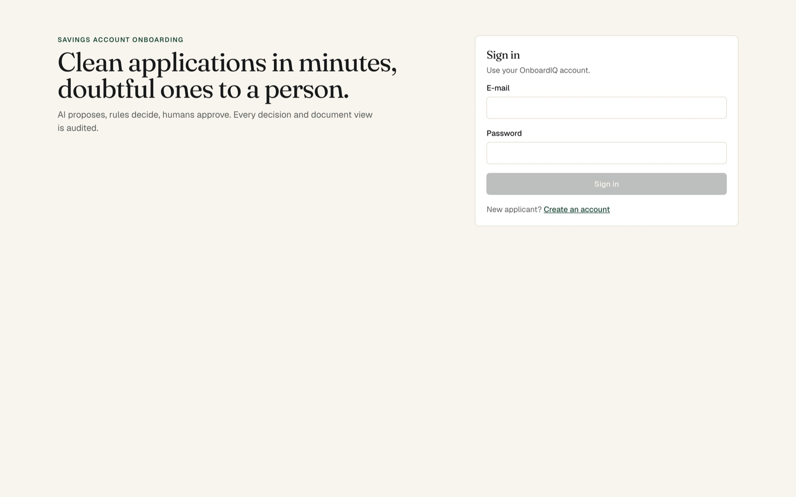
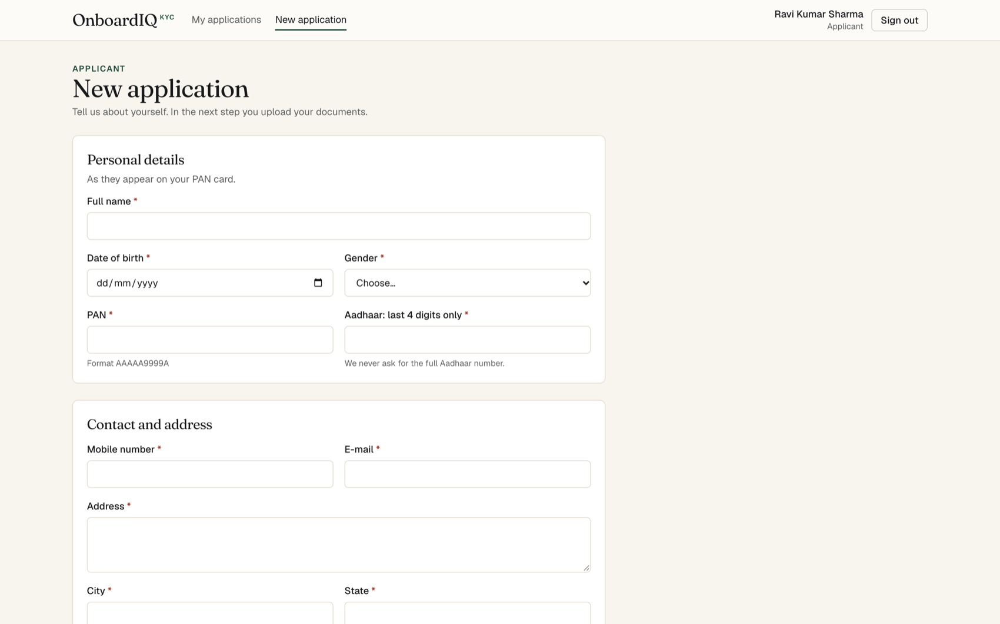
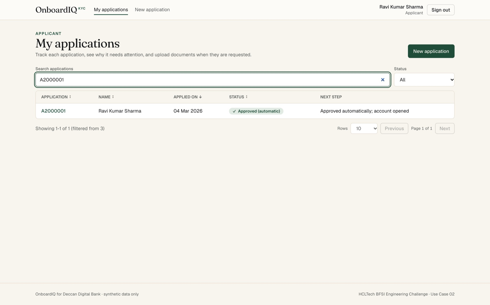
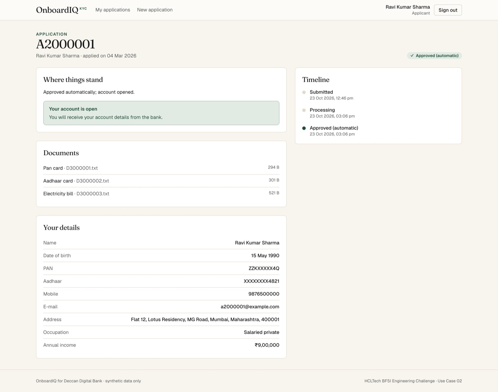
Officers work the review queue: highest risk first, then the longest waiting. They only see cases in review, awaiting the checker or awaiting new documents.
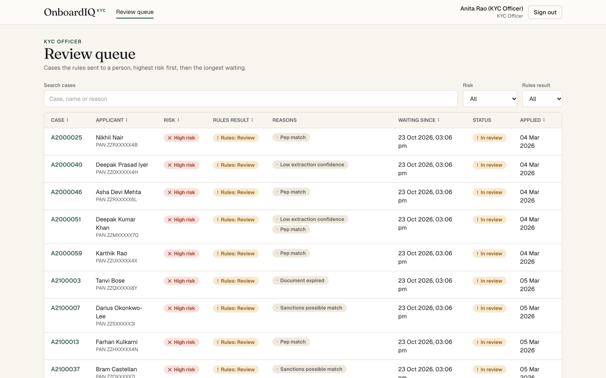
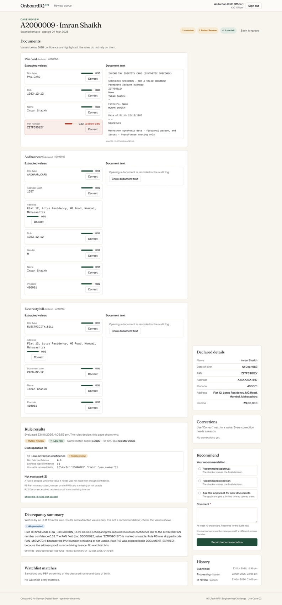
Compliance Officers decide cases awaiting a checker, see the dashboard and audit trail, find any application, and maintain watchlists and rule configuration.
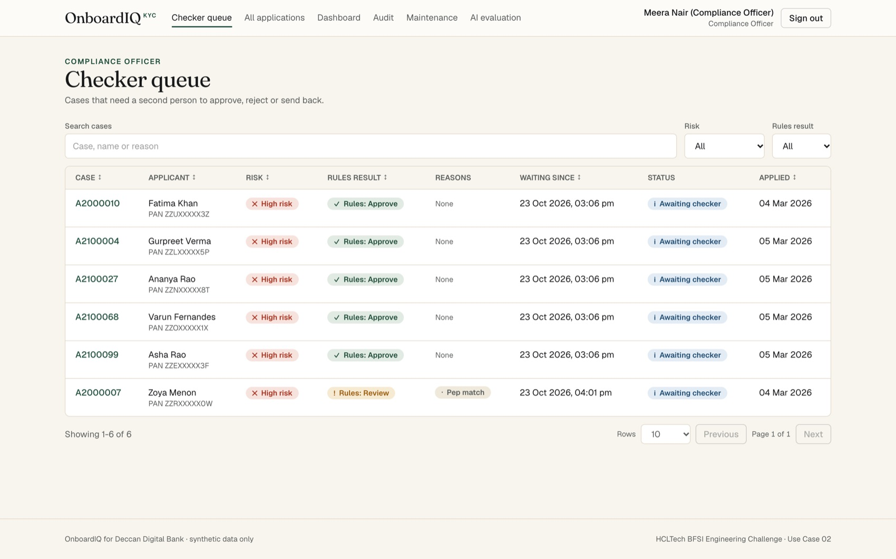
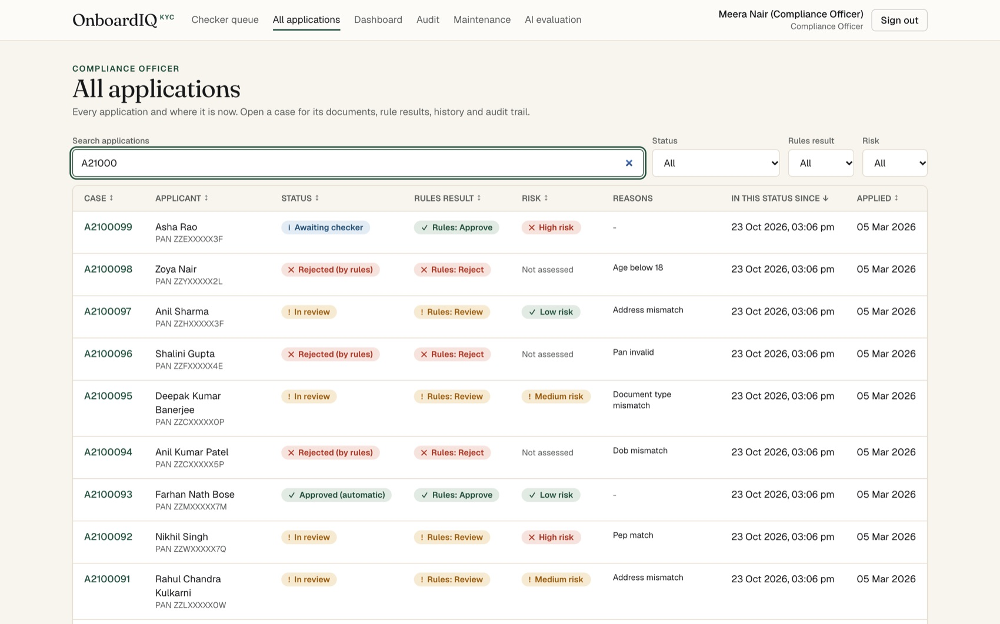
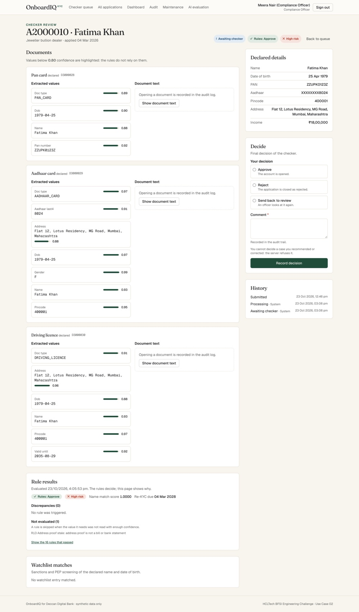
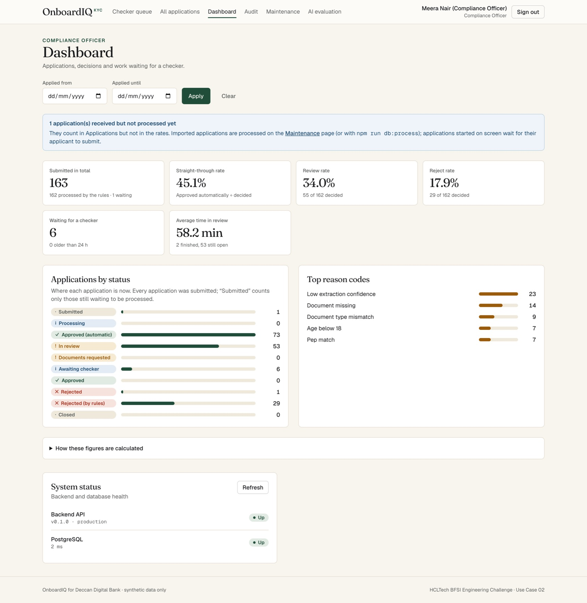
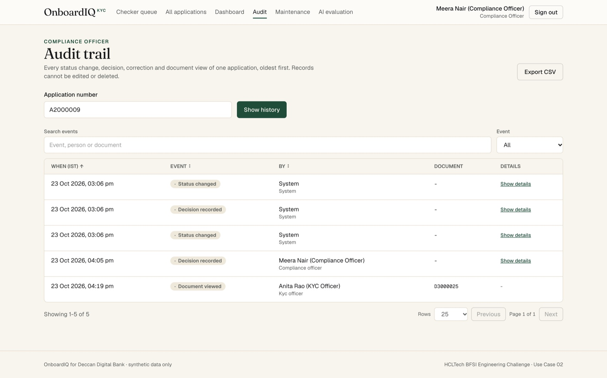
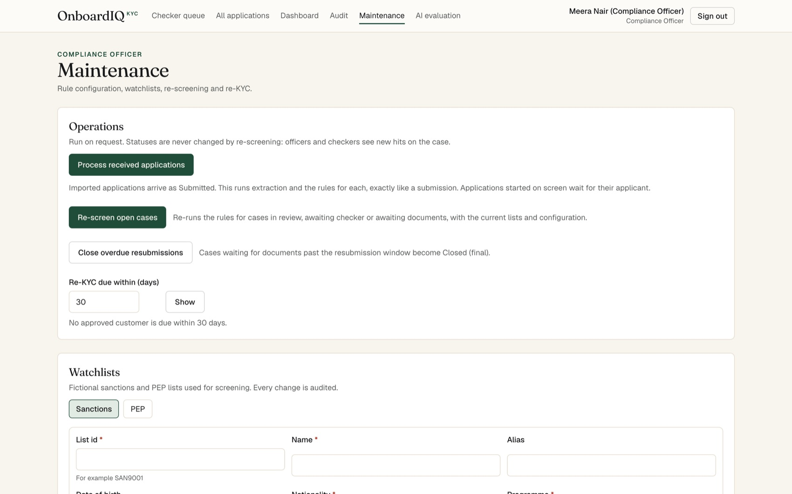
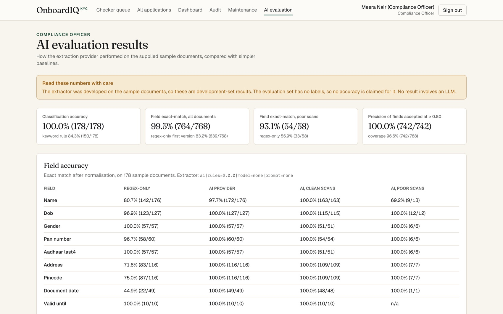
Every screen fits a 390-pixel-wide phone without sideways scrolling; this is checked automatically for 14 screens in Chrome. The menu collapses behind a Menu button.
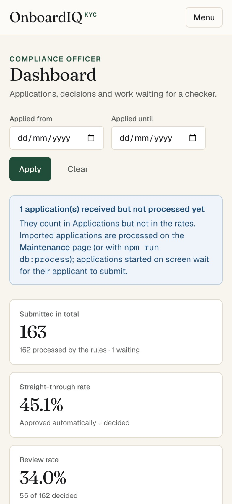
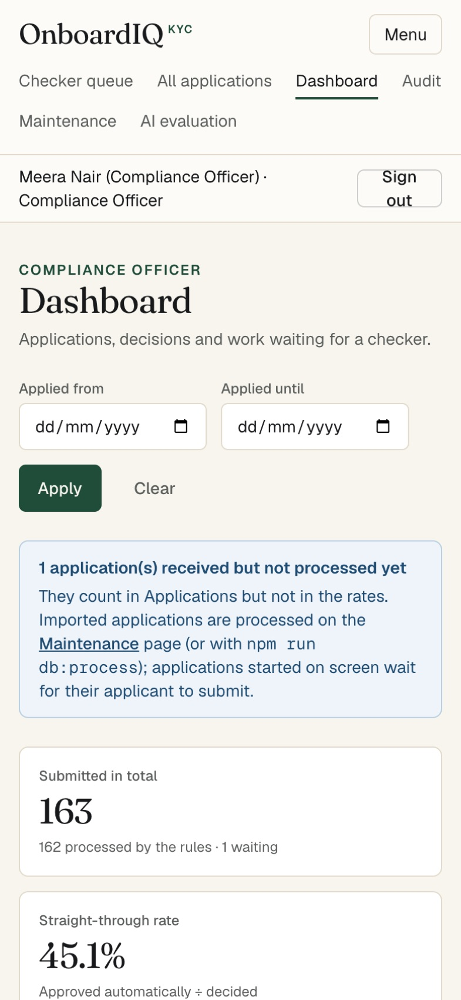
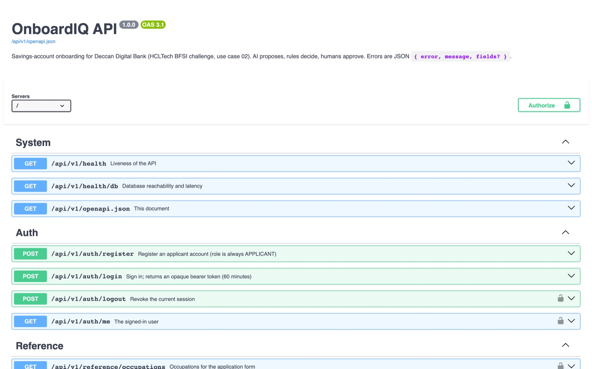
PASS means an automated test or a measured command shows it. The full matrix with test names is in output/qa_report.md.
| ID | Requirement | What we built · evidence | Result |
|---|---|---|---|
| FR-1 | Roles on the server; no access to other applicants' data | Role guards and ownership checks on every route; another applicant's case answers 404, a wrong role 403; attempts are audited. 29 authorisation tests. | PASS |
| FR-2 | Form + upload, server validation, last-4 Aadhaar, SHA-256 | 400/422 naming each field; 12-digit Aadhaar refused; .txt (UTF-8) and text PDF, 1 MB, at least 3 files, hash de-duplication. | PASS |
| FR-3 | Extraction interface, mock and ai by configuration | POST /documents/{id}/extract; unknown document → OTHER 0.00; EXTRACTION_PROVIDER switches with no code change. | PASS |
| FR-4 | R1–R17, decision, codes, score, risk, re-KYC from configuration | Table-driven pure engine; 60/60 golden test; config change test; 75 rule tests at every boundary. | PASS |
| FR-5 | Normalisation + Levenshtein; matched entry on screen | Example 4 = 0.7647; examples 6 and 7 show SAN0002 and PEP0001 with similarity and date-of-birth comparison. | PASS |
| FR-6 | Review workbench | Risk-ordered queue, text beside fields, low-confidence highlight, correction with reason re-runs rules, recommendation with comment. | PASS |
| FR-7 | Maker-checker, mock core banking | Maker = checker → 403 (example 11); HIGH-risk approval waits (example 10); approval returns customer ID and account number. | PASS |
| FR-8 | Applicant tracking and resubmission | Timeline, readable reason for every code, 7-day resubmission with re-evaluation and expiry. | PASS |
| FR-9 | Append-only audit | Status, decisions, corrections (before/after), watchlist hits, document views; trigger blocks update/delete. | PASS |
| FR-10 | Dashboard that reconciles | All required figures plus date filter; recomputed independently from the tables in a test. | PASS |
| FR-11 | Batch decisions command | npm run batch writes decisions_output.csv; sample run reproduces all expected columns. | PASS |
| AI-1 | Classification ≥ 97%, two baselines, injection → OTHER | 100.0% (178/178) vs 98.3% (declared type) and 84.3% (keyword rule); injection document D3000486 → OTHER. | PASS |
| AI-2 | Extraction ≥ 90%; ≥ 98% PAN, Aadhaar-4, DOB on clean scans | 99.5% overall (regex-only first version 83.2%); clean PAN / Aadhaar-4 / DOB 100%. | PASS |
| AI-3 | "ai" provider integrated, 10 s timeout, output files | Uploads classified and decided automatically; failure or timeout → confidence 0 → REVIEW; evaluation outputs generated and validated. | PASS |
| AI-4 | Calibration and officer feedback (SHOULD) | Fields accepted at ≥ 0.80 are 100% correct (742/742); corrections stored as labelled feedback. Correction rate needs real officer feedback, which the data does not contain. | PARTIAL |
| AI-5 | LLM reviewer summary (MAY) | Groq summary, ≤ 80 words, "AI-generated", values checked against the case, decision wording refused; tested with a fake model and live. | PASS |
| Area | What we built · evidence | Result |
|---|---|---|
| Responsible AI | AI only supplies values; every reason shows the values compared; fields below 0.80 cannot cause a rejection; fallback to REVIEW; LLM input in random delimiters with strict output schemas; fairness: NAME_MISMATCH_MINOR is 2.0% for both genders; extractor, model and prompt version stored with every extraction. | PASS |
| Outputs | decisions_output.csv, extraction_output.csv, ai_decisions_output.csv, evaluation report, model card, audit CSV, decision API response: 32/32 validation checks (headers, column order, row counts, dates, 4-decimal scores, empty cells), byte-identical across two runs from empty databases. | PASS |
| Performance | One application through the API: max 27 ms (target 2 s). AI extraction without LLM: max 17 ms per document (target 1 s); with Groq about 1 s (target 10 s, one live sample). 100-application batch: 0.18 s (target 60 s). | PASS |
| Concurrency | Optimistic locking: 10 simultaneous submissions → 1 success, 9 × HTTP 409; also tested for two checkers and recommendation vs correction. | PASS |
| Precision, configuration | Floating-point similarity rounded only for output; IST calendar dates; thresholds, patterns, titles, re-KYC periods and lists come from configuration and tables; watchlist change re-screens open cases on request. | PASS |
| Files, idempotency, masking | Type, UTF-8 and size checks; stored outside the web root, never executed, served only after authorisation; same hash never stored twice; Aadhaar last 4 only; PAN masked in lists, logs and exports. | PASS |
| Deliverables | Design document, OpenAPI, lifecycle and ER diagrams in output/design; configuration and lists loaded from the supplied files; AI-track files; Dockerfiles and Compose; prompts in /prompt. Source lives in backend/ and frontend/ instead of a /code folder (explained in the README). | PASS |
| Bonus ideas | Built: watchlist update with re-screening, re-KYC due list, PDF upload (text layer). Not built: image OCR, highlighting the text span of each field, mock CKYC search, multilingual name matching. | PARTIAL |
| # | Case | Expected | Our result | |
|---|---|---|---|---|
| 1 | A2000001 | APPROVE · 1.0000 · LOW · 2036-03-04 · AUTO_APPROVED | identical, account opened | ✓ |
| 2 | A2000002 | REJECT · AGE_BELOW_18 · 1.0000 · AUTO_REJECTED | identical | ✓ |
| 3 | A2000003 | REJECT · PAN_MISMATCH | identical | ✓ |
| 4 | A2000004 | REVIEW · NAME_MISMATCH_MINOR · 0.7647 · LOW | identical | ✓ |
| 5 | A2000005 | REVIEW · ADDRESS_PROOF_STALE · 1.0000 · LOW | identical | ✓ |
| 6 | A2000006 | REJECT · SANCTIONS_MATCH (SAN0002) | identical | ✓ |
| 7 | A2000007 | REVIEW · PEP_MATCH · HIGH · 2028-03-04 (PEP0001) | identical | ✓ |
| 8 | A2000008 | REVIEW · DOCUMENT_MISSING|DOCUMENT_TYPE_MISMATCH · 1.0000 | identical | ✓ |
| 9 | A2000009 | REVIEW · LOW_EXTRACTION_CONFIDENCE; PAN_MISMATCH not evaluated; AI read → APPROVE | identical; AI provider reads ZZTPS9012Y ≥ 0.80 → APPROVE | ✓ |
| 10 | A2000010 | APPROVE · HIGH · 2028-03-04 · PENDING_CHECKER | identical | ✓ |
| 11 | live | Maker tries to check own case → 403; other checker approves → account | as expected | ✓ |
| 12 | live | Correct PAN with reason → APPROVE, PENDING_CHECKER, old/new in audit | as expected (also in Chrome E2E) | ✓ |
| Suite | What it covers | Tests | Result |
|---|---|---|---|
| Backend unit + integration | Rules and golden data, import (duplicates, malformed files, bad references, rollback), auth, authorisation and IDOR, uploads incl. PDF, extraction and timeouts, prompt injection, workflow and maker-checker, concurrency, dashboard, audit, outputs, OpenAPI contract, AI summary guardrails, Groq client. Runs on a real PostgreSQL test database. | 526 | all pass |
| Frontend components | Forms and validation (12-digit Aadhaar), tables (search, sort, filter, pages), case review (highlight, reason required, document text on demand, 10-character comment), dashboard figures and empty states, audit, maintenance, registration, role navigation, 403/409 messages, toasts. | 61 | all pass |
| End-to-end in Chrome | New application with PDF upload; applicant → officer correction → different checker → approved; registration and watchlist re-screening; 14 screens at phone width without sideways scrolling. | 7 | all pass |
| Static checks and builds | Strict TypeScript, ESLint, Prettier, production builds of both apps, Docker images. | - | pass |
| Continuous integration | GitHub Actions on every push: all of the above against PostgreSQL, output validation, Chrome E2E. | - | passed |
GitHub Actions run 39941667580 on commit 2b52cdf: install, full check against PostgreSQL, output validation and Chrome end-to-end all green.
Spot checks, not an accuracy claim: evaluation figures are measured without an LLM.
| Metric | Regex-only first version | Our AI provider | Target |
|---|---|---|---|
| Classification accuracy | 84.3% | 100.0% | ≥ 97% |
| Field exact match, all documents | 83.2% | 99.5% | ≥ 90% |
| Field exact match, poor scans | 56.9% | 93.1% | - |
| PAN / Aadhaar-4 / DOB, clean scans | 100 / 100 / 100% | 100 / 100 / 100% | ≥ 98% |
| Precision of fields accepted at ≥ 0.80 | 98.5% | 100.0% | - |
The extractor was developed on the sample documents, so these are development-set results. The evaluation set has no labels; we report agreement with the mock there, not accuracy.
We treated validation as a separate step: tests were written against the specification, and every failure was fixed in the code and re-run before moving on.
| Found | Fix |
|---|---|
| Three Compliance routes (re-screen, expire overdue, re-KYC due) lost in an edit | Caught by the full regression run; restored, tests pass |
| Design document, OpenAPI and diagrams missing (mandatory deliverable) | Generated from the code so they cannot drift; contract test checks every route |
| Supplied applications stayed "Submitted", so the dashboard showed 0% rates | Processing job (CLI, seed and a Maintenance button) plus a dashboard notice |
| Applicant registration and watchlist / configuration maintenance had no screens | Registration and Maintenance pages with tests |
| Rejected cases could not be found on screen | All applications page for Compliance Officers |
| Only .txt uploads | Text-based PDF upload; scans refused with a clear 422 |
| Groq model name no longer served (HTTP 404) | Switched to openai/gpt-oss-120b; verified live |
| AI evaluation page 162 px wider than a phone screen | Found by the new responsive test; layout fixed; 14 screens now checked on every run |
| Design sources excluded from Git by an ignore rule | Found by a clean-clone build; rule fixed |
| Raw error text after refused actions | Clear 403 and 409 messages on every action screen |
GitHub Actions (.github/workflows/ci.yml) runs on every push and pull request: install, typecheck, lint, format, all 587 unit, integration and component tests against PostgreSQL, both builds, validation of the committed /output files and the 7 Chrome end-to-end tests. Run 39941667580 passed every step. A fresh clone with a clean install also passes the full check.
cp .env.example .env # fill the change-me values npm run install:all npm run db:up && npm run db:migrate npm run db:seed # data pack, demo users, processing npm run dev # API :3000, UI :5173 # or everything in Docker docker compose up --build # UI on http://localhost:8080
npm run check # types, lint, format, tests, builds npm run e2e # Chrome end-to-end (own database) npm run outputs -- --fresh-db npm run outputs:repeat # determinism proof npm run perf # performance report npm run design # design docs and /prompt npm run batch # decisions_output.csv
| Account | Role | Use it to |
|---|---|---|
| applicant1@onboardiq.test | Applicant | Apply, upload, track (owns sample A2000001) |
| officer1@onboardiq.test / officer2 | KYC Officer (maker) | Review queue, corrections, recommendations |
| checker1@onboardiq.test / checker2 | Compliance Officer (checker) | Checker queue, dashboard, audit, maintenance |
The password is SEED_DEMO_PASSWORD from your .env. Optional LLM: set GROQ_API_KEY, REVIEW_SUMMARY_LLM=groq and, for extraction, EXTRACTION_PROVIDER=ai with EXTRACTION_LLM=groq.
| Item | Location |
|---|---|
| Source code and tests | backend/, frontend/ |
| Graded outputs | output/*.csv, output/evaluation_report.md, output/model_card.md |
| Design, API, diagrams | output/design/ |
| QA evidence | output/qa_report.md, output/performance_report.md |
| LLM prompts | prompt/ |